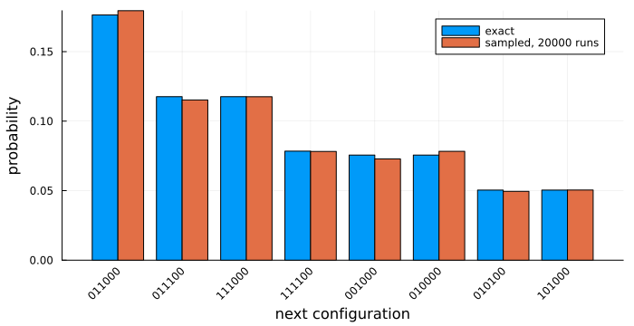
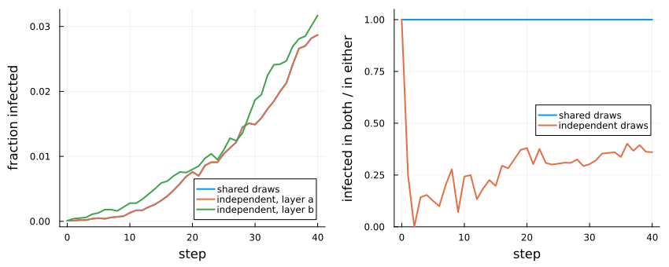

Stochastic cellular automata in a Markov category
Simon Frost
- Overview
- A stochastic automaton
- Copying is not natural
- Pairs need a coupling
- Composites have dependent cells
Overview
Most cellular automata in ecology are stochastic: a plant is infected with some probability, a seed lands somewhere at random. The papers behind this package treat deterministic automata, which form a cartesian category (Castillo-Ramirez et al. 2025, 2026). This vignette is a research extension beyond them. It treats a stochastic cellular automaton as a Markov kernel, a morphism of a Markov category, and shows on small examples which of the earlier constructions survive and which do not.
- Copying is no longer natural. Running an automaton once and copying the result is not the same as running it twice.
- Pairs are no longer unique. Two stochastic automata from the same domain combine in many ways, one for each coupling of their randomness. In CellularAutomataCore that choice is the choice of draw numbers.
- Composites of automata whose cells are independent can have cells that are not.
ENV["GKSwstype"] = "100"
using CategoricalCellularAutomata
using CellularAutomataCore: CellularAutomataCore, LocalRule, VonNeumann, CAProblem, solve,
bernoulli
using Plots
using StatisticsA stochastic automaton
On a ring of six plants, a healthy plant (0) is infected with probability 1 - (1 - β)^k when k of its two neighbours are infected, and an infected plant (1) recovers with probability γ. The local rule is a kernel: for each pattern on the memory set, a vector of probabilities over the states. Each cell draws its new state from its own kernel, independently of the other cells given the current configuration.
Z = CyclicGroup(6)
B = FinAlphabet(0:1)
β, γ = 0.4, 0.3
sis = StochasticCA(Z, [5, 0, 1], p -> begin
left, cell, right = p
q = cell == 1 ? 1 - γ : 1 - (1 - β)^(left + right)
return [1 - q, q]
end; dom=B)
x = Configuration(Z, [0, 1, 1, 0, 0, 0])
d = distribution(sis, x)
(outcomes=length(d), total=sum(values(d)))(outcomes = 16, total = 1.0)There are 16 possible outcomes, not 2^6: the two plants with no infected neighbour stay healthy for certain.
distribution enumerates every outcome exactly, which is possible on a ring of six cells. On CellularAutomataCore the same automaton is sampled with the counter-based random numbers; the frequencies over many seeds agree with the exact probabilities:
runs = [Tuple(solve(CAProblem(sis, x, 1; seed=s)).u[end]) for s in 1:20_000]
top = first(sort(collect(d); by=last, rev=true), 8)
labels = [join(parent(y)) for (y, _) in top]
exact = [p for (_, p) in top]
sampled = [count(==(Tuple(parent(y))), runs) / length(runs) for (y, _) in top]
at = 1:length(top)
bar(at .- 0.2, exact; bar_width=0.4, label="exact", xticks=(at, labels), xrotation=45,
ylabel="probability", xlabel="next configuration", size=(700, 360),
bottom_margin=6Plots.mm, left_margin=3Plots.mm)
bar!(at .+ 0.2, sampled; bar_width=0.4, label="sampled, 20000 runs")
Copying is not natural
In a cartesian category, applying an automaton and then copying its output is the same as copying the input and applying the automaton to each copy. For a stochastic automaton the first gives two identical configurations, and the second gives two independent runs:
copied_then_run = 1.0 # the two copies always agree
run_twice = sum(p^2 for p in values(d)) # two independent runs agree
(copied_then_run, round(run_twice; digits=3))(1.0, 0.091)Both sides are pairs of runs with the same marginal distribution: each copy, on its own, is one run of the automaton. They differ in how the two copies depend on each other.
Pairs need a coupling
The same thing happens when two automata are paired into one with two layers. stochastic_pair takes the coupling of the two layers’ randomness as a choice. With :independent the layers draw independently. With :shared both use one uniform draw, so that pairing an automaton with itself is exactly copying one run:
independent = distribution(stochastic_pair(sis, sis; coupling=:independent), x)
shared = distribution(stochastic_pair(sis, sis; coupling=:shared), x)
layers_differ(dist) = sum((p for (y, p) in dist if any(t -> t[1] != t[2], parent(y)));
init=0.0)
(independent=round(layers_differ(independent); digits=3),
shared=layers_differ(shared))(independent = 0.909, shared = 0.0)Both pairs project onto the same two automata. Each layer of either pair has exactly the distribution of sis. So the projections cannot identify a pair, and the universal property of a product fails.
In CellularAutomataCore the coupling is chosen by the draw numbers of a rule. bernoulli(ctx, p, k) draws the k-th counter-based uniform of a cell at a time. Two layers that use the same k are coupled as :shared, and with different k they are independent. Here two layers of the same epidemic run on a 100 × 100 torus:
function two_layers(k1, k2)
return LocalRule(VonNeumann(1)) do c, n, ctx
update(layer, k) = getfield(c, layer) == 1 ?
Int8(!bernoulli(ctx, 0.2, k)) :
Int8(bernoulli(ctx, 1 - 0.8^count(m -> getfield(m, layer) == 1, n), k))
return (a=update(:a, k1), b=update(:b, k2))
end
end
u0 = (a=zeros(Int8, 100, 100), b=zeros(Int8, 100, 100))
u0.a[50, 50] = u0.b[50, 50] = 1
coupled = solve(CAProblem(two_layers(1, 1), u0, 40; seed=3))
uncoupled = solve(CAProblem(two_layers(1, 2), u0, 40; seed=3))
# of the plants infected in either layer, the fraction infected in both
overlap(sol) = [count((u.a .== 1) .& (u.b .== 1)) / max(1, count((u.a .== 1) .| (u.b .== 1)))
for u in sol.u]
prevalence(sol, layer) = [mean(getfield(u, layer)) for u in sol.u]
plot(plot(coupled.t, [prevalence(coupled, :a) prevalence(uncoupled, :a) prevalence(uncoupled, :b)];
label=["shared draws" "independent, layer a" "independent, layer b"],
xlabel="step", ylabel="fraction infected", lw=2, legend=:bottomright),
plot(coupled.t, [overlap(coupled) overlap(uncoupled)];
label=["shared draws" "independent draws"], xlabel="step",
ylabel="infected in both / in either", lw=2, legend=:right, ylims=(0, 1.05));
layout=(1, 2), size=(850, 340), bottom_margin=5Plots.mm, left_margin=5Plots.mm)
Layer a uses draw 1 in both runs, with the same seed, so it is the same epidemic in both, and its two curves coincide. With shared draws layer b is that epidemic again, copied. With independent draws it is a second epidemic, alike in its statistics but infecting different plants: by the end, of the plants infected in either layer, only about a third are infected in both. Neither is wrong. Which one a model means is a modelling decision, and the counter-based random numbers make it explicit.
Composites have dependent cells
A stochastic automaton draws its cells independently given the input. Two steps of one do not: two neighbouring cells after two steps both depend on the same intermediate cells, which are random. So the composite of two such automata is a Markov kernel, but not one of the same form.
two_steps = distribution(sis, d)
joint = marginal(two_steps, y -> (y[0], y[1]))
p0, p1 = marginal(two_steps, y -> y[0]), marginal(two_steps, y -> y[1])
(both_infected=round(joint[(1, 1)]; digits=4),
if_independent=round(p0[1] * p1[1]; digits=4))(both_infected = 0.3025, if_independent = 0.2726)The probability that both cells are infected is larger than the product of their probabilities: the cells are positively correlated, through the infections they share. Stochastic automata of the cellwise-independent kind are closed under pairing (given a coupling) but not under composition. The category they generate contains kernels with correlated cells. Which categorical setting is the natural one for stochastic spatial models, in the way that cartesian categories are for deterministic ones, is a question this package leaves open.
Castillo-Ramirez, Alonso, Alejandro Vazquez-Aceves, and Angel Zaldivar-Corichi. 2025. Categorical Products of Cellular Automata. https://arxiv.org/abs/2503.21567.
Castillo-Ramirez, Alonso, Alejandro Vazquez-Aceves, and Angel Zaldivar-Corichi. 2026. A Categorical Framework for Cellular Automata. https://arxiv.org/abs/2602.04049.